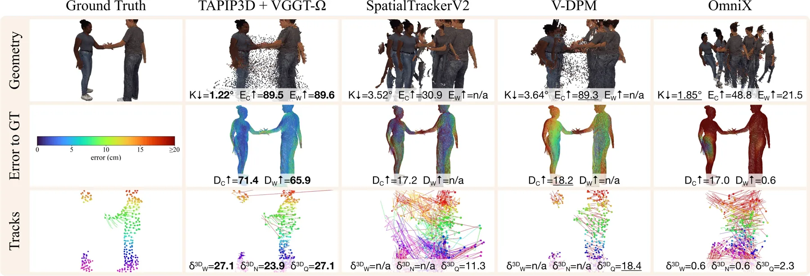
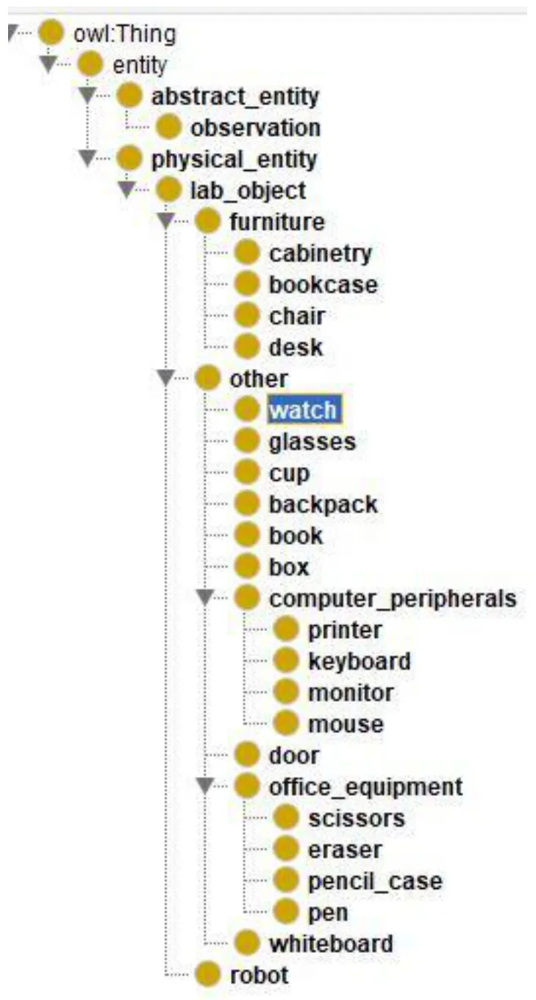

新论文 · 日期 2026-09-03 · score 15 · S层 · Geometry Foundation Models / 3D Foundation Models · cs.CV
内容级别：完整单篇海报
作者：Ernesto Lozano, Alberto Jaenal, Javier Civera
评分 15/10
3D 几何基础模型视觉惯性融合尺度锚定稠密深度可靠状态估计
一句话工作总结：这是一条从几何基础模型到可靠状态估计的直接融合路径：保留 3DFM 的强相对几何先验，再用 IMU 补足单目不可观测的尺度。重点风险是运动激励、IMU 偏置和测试时优化的稳定性。
VI3 将预训练 3D foundation model 的无尺度相机位姿与稠密深度，和 IMU 提供的有尺度运动参考结合，在不需要 ground-truth supervision 的情况下恢复 metric scale。它通过惯性初始化、尺度锚定以及可选的测试时 refinement 改善几何一致性。
3D foundation models (3DFMs) excel at predicting camera poses and dense depth from multiple views of a scene, showcasing strong zero-shot generalization. However, as metric scale is not observable from monocul…

新论文 · 日期 2026-09-02 · score 12 · S层 · 3D/4D Spatial Perception · cs.CV
内容级别：完整单篇海报（待补全）
作者：Skanda Koppula, Frano Rajic, Abdullah Faiz Ur Rahman, Yi Yang
评分 12/10
3D 点追踪多视角4D 重建基准数据集
一句话工作总结：把 3D 点追踪从单视频扩展到多相机、非刚体和长期轨迹，并指出几何恢复是主要瓶颈。
TAPVid-MV 提供在相机运动和多视角同步条件下长期、像素级 3D point tracking 的基准。它同时测量重建与追踪，因而可以区分几何恢复错误和 correspondence 错误。
Multi-camera systems are increasingly practical for robotics, AR/VR, and autonomous driving because complementary views reduce depth ambiguity and preserve visibility under occlusion. Existing point-tracking b…

新论文 · 日期 2026-09-04 · score 11 · S层 · Geometry Foundation Models / 3D Foundation Models · cs.CV
内容级别：完整单篇海报（待补全）
作者：Denis M. Akola, David F. Fouhey
评分 11/10
3D 基础模型latent diffusion新视角深度pointmap
一句话工作总结：把 3DFM 的隐藏表征当作可解码的场景先验，用 latent diffusion 补全新视角深度，而不是只在可见视图做前馈重建。
Z3D 研究 3DFM 内部表征是否包含关于遮挡表面和场景结构的知识，并用 latent diffusion 在未观测视角预测 pointmaps。它在 DTU、7-Scenes 和 NRGBD 等数据上评估新视角深度及多视角几何。
3D Foundation Models (3DFMs) such as VGGT have recently pushed the boundaries of 3D vision by predicting rich unified representations with feed-foward transformers. The scene representations learned by these m…

新论文 · 日期 2026-09-04 · score 10 · S层 · Geometry Foundation Models / 3D Foundation Models · cs.CV
内容级别：完整单篇海报（待补全）
作者：Adeela Islam, Zorah Lähner, Vittorio Murino, Vladislav Golyanik
评分 10/10
3D correspondencemesh transformer曲率 tokenisation非等距形变
一句话工作总结：把几何自适应 tokenisation、跨形状特征交互和 functional map 预测合并为 feed-forward correspondence 模型，重点解决部分观测和非等距形变。
TokenMatch 用曲率与谱几何信号把 mesh 自适应划分为带重叠的 patch tokens，再用 self/cross attention 学习 dense correspondence。它只在 BeCoS partial-to-partial 上训练，却能迁移到 full-to-full 和 partial-to-full matching。
While data-driven 3D shape correspondence estimation has recently seen substantial progress, robust matching under partial observations and strong non-isometric deformations remains challenging. Existing learn…

新论文 · 日期 2026-09-03 · score 17 · A层 · Robotic Foundation Models / VLA · cs.RO
内容级别：半海报（待补全）
作者：Konstantinos Dimitropoulos, Ioannis Hatzilygeroudis
评分 17/10
语义地图动态世界模型对象跟踪本体推理
一句话工作总结：这是从几何定位到空间推理的桥接候选，但当前证据来自 PDF 正文，缺少官方 HTML 和完整量化实验，因此详情页保持待核验。
论文提出外部标定相机、homography 几何定位、目标检测、持久跟踪和 ontology-driven semantic update 的混合系统。它持续更新对象实例、空间属性和语义关系，形成动态 semantic world model。
Semantic mapping plays a crucial role in the ability of a robot to interact with objects, operate and navigate a complex environment. The most common pipeline for semantic mapping consists of geometric mapping…